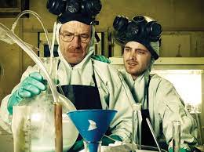
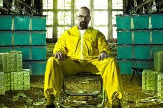

«Во все тяжкие» (англ. Breaking Bad) — американская телевизионная криминальная драма, премьерные серии которой транслировались с 20 января 2008 года по 29 сентября 2013 года по кабельному каналу AMC. На протяжении пяти сезонов, состоящих из 62 эпизодов, показана история Уолтера Уайта, школьного учителя, у которого диагностировали неоперабельный рак лёгких. Вместе со своим бывшим учеником Джесси Пинкманом он начинает производить и продавать метамфетамин, чтобы обеспечить финансовое будущее своей семьи. Постановка и съёмка сериала велись в городе Альбукерке, штат Нью-Мексико.
Создатель и исполнительный продюсер сериала — Винс Гиллиган. Главные роли в сериале исполнили Брайан Крэнстон, сыгравший Уолтера Уайта, и Аарон Пол, ставший его сообщником Джесси Пинкманом. Анна Ганн стала Скайлер Уайт — женой Уолтера Уайта, Ар-Джей Митт — его сыном. Бетси Брандт исполнила роль сестры Скайлер — Мари Шрейдер, а её мужа Хэнка Шрейдера сыграл Дин Норрис. Начиная со второго сезона, Уолтер нанял адвоката Сола Гудмана, в роли которого выступил Боб Оденкерк. Он в свою очередь познакомил Уолта с частным сыщиком Майком Эрмантраутом, сыгранным Джонатаном Бэнксом. Временным работодателем Уолта в сфере наркоторговли стал Густаво Фринг, в исполнении Джанкарло Эспозито. В заключительном сезоне сериала появились Джесси Племонс в роли Тода Алкиста, временного сообщника Уолтера Уайта, и Лора Фрейзер в роли Лидии Родарт-Куэйл, новой компаньонки Уолта.


Первый сезон сериала знакомит зрителя с жизнью Уолтера Уайта (Брайан Крэнстон) — 50-летнего школьного учителя химии из города Альбукерке. Помимо преподавания он вынужден подрабатывать на автомойке, чтобы содержать свою беременную жену (Анна Ганн) и сына-инвалида (Ар Джей Митт). Однако Уолтеру приходится пересмотреть свой привычный образ жизни, когда у него диагностируют неоперабельный[6] рак лёгкого.
Дуэт главных персонажей, Уолтера Уайта (Брайан Крэнстон) и Джесси Пинкмана (Аарон Пол), журнал Rolling Stone назвал в числе «50 лучших теледуэтов всех времён». Взаимоотношения персонажей на протяжении всего сериала воплощают самое широкое разнообразие архетипов: ученик и учитель, господин и слуга, отец и сын, герой и злодей[7].
С целью оплаты лечения и обеспечения финансового будущего своей семьи Уолтер Уайт решает заняться производством метамфетамина. Его напарником становится бывший ученик — Джесси Пинкман (Аарон Пол). Вместе они покупают домик на колёсах и отправляются в пустыню, чтобы приготовить первую партию наркотика. Но приготовление — это лишь полдела, нужно ещё продать полученный метамфетамин. И на этом пути напарники то и дело попадают в сложные ситуации, в которых им приходится принимать непростые решения.
Для начала Уолтеру и Джесси приходится избавиться от мелкого наркоторговца Крейзи-Эйта, который собирался их убить. Затем возникают проблемы с добычей необходимого количества псевдоэфедрина, и Уолтер Уайт решает изменить первоначальный процесс производства метамфетамина. Для этого они с Джесси крадут бочку метиламина со склада химикатов. Для сбыта новых порций наркотика напарники достигают соглашения с местным «дистрибьютором» Туко Саламанкой (Рэймонд Крус). Своими действиями начинающие преступники привлекают внимание отдела УБН во главе с Хэнком Шрейдером (Дин Норрис), который является свояком Уолтера Уайта.
Второй сезон
Во втором сезоне Уолтера и Джесси похищает наркоторговец Туко, но им удаётся сбежать. Никакие проблемы не могут остановить Уолтера Уайта на пути к намеченной цели, и они с Джесси опять отправляются в пустыню, где за четыре дня готовят крупную партию наркотика. Джесси привлекает своих приятелей для сбыта метамфетамина. Однако вскоре один из них попадает под арест. Начинающие наркоторговцы обращаются за помощью к адвокату Солу Гудману (Боб Оденкерк). Благодаря криминальным связям Сола Уолтер Уайт знакомится с Гусом Фрингом (Джанкарло Эспозито), который покупает весь оставшийся запас метамфетамина за 1,2 миллиона долларов.
Удача в криминальном бизнесе сопровождается неприятностями в личной жизни персонажей. Уолтер Уайт пропускает рождение своей дочери. Жена подозревает его в измене и заставляет съехать на отдельную квартиру. Подруга Джесси погибает от передозировки героина, а оказавшийся рядом в этот момент Уолтер Уайт позволяет девушке умереть. Её смерть запускает цепочку событий, кульминацией которых становится авиакатастрофа в небе над Альбукерке.
Третий сезон
В третьем сезоне Уолтер Уайт заключает крупную сделку с наркобароном Гусом Фрингом, который строит для Уолтера метамфетаминовую лабораторию в подвале одной из своих прачечных. Джесси в это время отправляется в реабилитационный центр, чтобы избавиться от наркозависимости. В лаборатории Уолтеру помогает новый напарник Гейл Беттикер (Дэвид Костабайл), поэтому после возвращения Джесси оказывается не у дел.
Пытаясь вернуться в наркобизнес, Пинкман то и дело попадает в неприятности, из которых его раз за разом выручает Уолтер Уайт. Сначала Джесси конфликтует с агентом Шрейдером. Уолтер предлагает Джесси работу в лаборатории, чтобы уладить конфликт. Затем Джесси нарушает договорённости с Гусом Фрингом. Уолтер опять помогает напарнику и «принимает огонь на себя». После этого Пинкман вынужден скрываться, а в лабораторию на должность ассистента возвращается Гейл Беттикер, который уже достаточно знаком с производственным процессом, чтобы взять управление в свои руки. Ради спасения своих жизней Уолтер и Джесси решаются на убийство Беттикера